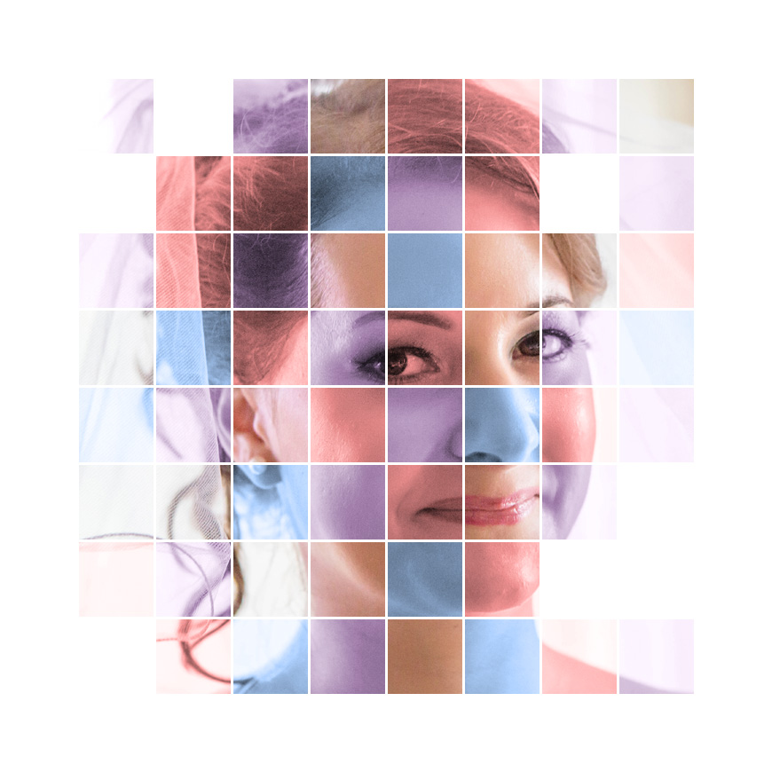

<div class="container-fluid">
  <div class="row">
    <div class="col-12 col-lg-6 text-center">
      
    </div>
    <div class="col-12 col-lg-6">
      <p class="fejlec">Bemutatkozás</p>
      <p class="bemutatkozas">Pályafutásomat rendezvényszervezőként kezdtem, amit mindig is nagyon szerettem. Öt évet töltöttem el egy rendezvényszervező
        cégnél, ahol előbb asszisztensként, majd másfél év eltelte után rendezvényszervezőként foglalkoztattak. Ez idő alatt
        számtalan konferencia, szakmai esemény, sport rendezvény, esküvő és egyéb rendezvény megszervezésében vettem részt,
        és kamatoztathattam szervezési és problémamegoldó készségeimet. </p>
      <p class="bemutatkozas">
        De munkám során nem csupán a rendezvények világába kaptam betekintést, de több más dologba is belekóstolhattam. Többek között
        a honlapok és grafikai anyagok tervezésébe is bepillantást nyertem, hiszen nem egy alkalommal volt rá szükség, hogy
        az ügyfeleknek – akik eredetileg egy rendezvény megszervezésére kértek fel minket – honlapot, molinót vagy szóróanyagot
        tervezzünk. Hogy ezek a munkáim még színvonalasabbak legyenek, fejleszteni kezdtem magam. Megtanultam a HTML, a CSS
        és a JavaScript alapjait, valamint tovább fejlesztettem a Photoshop, az Illustrator és az InDesign tudásomat. A tanulás
        során megtapasztaltam, hogy ezek egyszerre igényelnek kreativitást, logikus gondolkodást és problémamegoldást is.
      </p>
      <p class="bemutatkozas">Egy rövid idő eltelte után, azt vettem észre magamon, hogy a webfejlesztést és a design munkákat is ugyanolyan lelkesedéssel
        végzem, mint a rendezvényszervezést. Hamarosan döntésre jutottam: a saját lábamra állok, és egy olyan vállalkozást
        indítok, ahol akár mindegyiket végezhetem. Igyekszem egyre tovább és tovább fejleszteni ezeket a tudásokat, hogy
        még jobb munkák kerülhessenek ki a kezeim közül.
      </p>
    </div>
  </div>

</div>